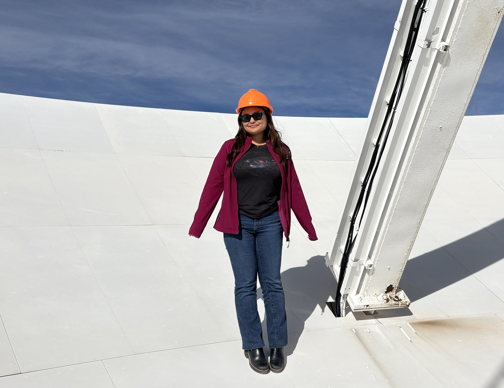

Paula Fudolig
4th Year Ph.D. Student
I'm a Physics Ph.D. student at George Mason University using radio astronomy to study the relationship between supermassive black holes and their host galaxies. I'm also a teaching assistant for introductory physics and astronomy lab courses. I received my Bachelor's degree in Astronomy and Physics from Boston University.
Outside of work, I like to explore the DC area and cross movies off my ever-growing watch list!

news
Jun 11, 2026
I visited my first VLBA antenna: Pie Town!
Jun 3, 2026
I wrapped up my first NRAO Synthesis Imaging Workshop!
Jan 29, 2026
I visited the VLA for the first time!